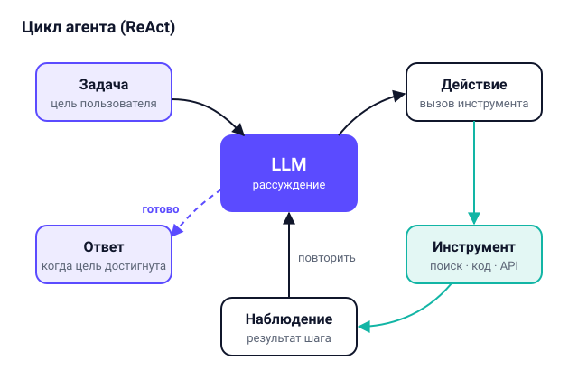
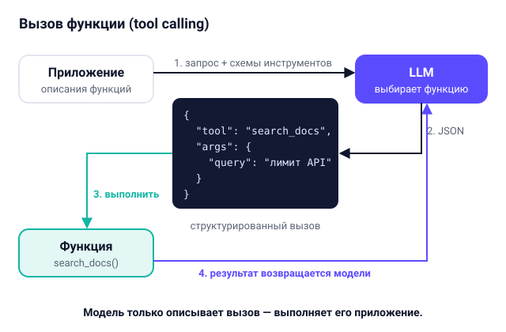
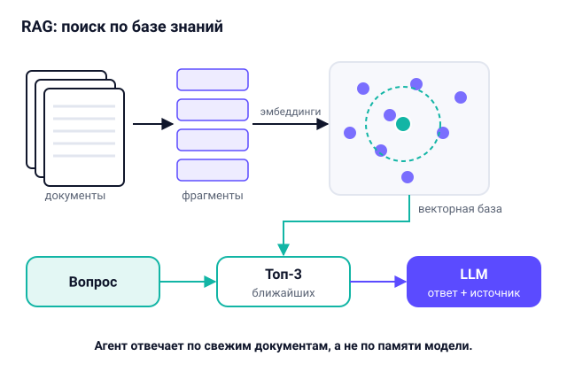
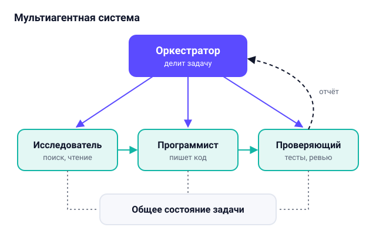
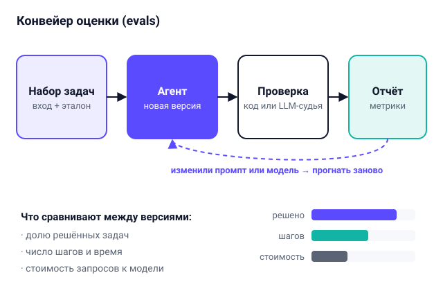

Как устроен современный ИИ-агент
Часто кажется, что ИИ-агент - это какая-то отдельная супер-нейросеть. На самом деле внутри сидит обычная языковая модель, а всю автономность ей дает программа-обертка, которую пишет разработчик. Ниже я разобрал по шагам, из каких частей собирается такая система.
1. Цикл рассуждения и действия (ReAct)


В основе почти любого ИИ-агента лежит обычный цикл while, который крутится на сервере.
На каждом шаге этого цикла программа отправляет языковой модели условие задачи и историю всех предыдущих
шагов. Модель анализирует ситуацию, записывает короткую "мысль" о том, чего ей сейчас не хватает для ответа,
и выбирает одно конкретное действие: либо вызвать внешний инструмент, либо завершить работу и выдать готовый
ответ пользователю.
Такую схему работы принято называть ReAct (от английских слов Reasoning + Acting, то есть "рассуждение и действие"). Главный плюс этого подхода в том, что агент не пытается угадать весь путь вслепую. Если он запустил поиск по файлам и ничего не нашел, то на следующем витке цикла он увидит это в блоке "Наблюдение" и просто попробует другой запрос. А если он сгенерировал кусок кода, который упал с синтаксической ошибкой, он прочитает текст ошибки из консоли и сам исправит строчку.
При этом у любого цикла есть риск застрять на одном месте - например, когда внешний сервис недоступен, а модель упорно пытается вызвать его снова и снова. Поэтому на практике программист всегда задает жесткий лимит: например, не больше 10-15 шагов на одну задачу или ограничение по времени выполнения в секундах.
2. Подключение инструментов (Tool Calling)


Для языковой модели "инструмент" - это обычная функция в нашем коде (например, на Python или JavaScript),
у которой есть понятное имя, текстовое описание и список аргументов с типами данных. Например, можно
написать функцию search_docs(query) для поиска по методичкам или run_sql(query)
для чтения данных из учебной базы. Все эти описания передаются модели вместе с пользовательским запросом.
Очень важный момент, который я сам понял не сразу: нейросеть ничего не выполняет на компьютере напрямую. Когда она решает воспользоваться функцией, она просто возвращает структурированный текст в формате JSON, где написано, какую функцию и с какими параметрами нужно позвать. А уже наш серверный скрипт читает этот JSON, проверяет, что аргументы корректные, вызывает настоящую функцию и отправляет ее вывод обратно модели.
Именно на этом этапе разработчик настраивает безопасность. Например, можно разрешить агенту свободно читать статьи и считать цифры в калькуляторе, но перед удалением файла или отправкой письма требовать подтверждения от пользователя по кнопке на экране.
3. Память и поиск по базе знаний (RAG)


У любой языковой модели есть ограничение по объему памяти на один запрос - так называемое контекстное окно. Запихнуть туда сразу все книги, документацию проекта и историю переписки за полгода не получится: это будет слишком медленно, дорого, да и сама модель начнет путаться в огромном полотне текста. Поэтому память агента делят на краткосрочную (текущие сообщения и шаги внутри одной задачи) и долгосрочную, которая лежит во внешней базе.
Чтобы агент мог быстро находить нужные сведения в больших документах, используют подход RAG (Retrieval-Augmented Generation - генерация, дополненная поиском). Сначала все тексты режут на небольшие абзацы (чанки) и пропускают через специальную модель-эмбеддер, которая превращает каждый абзац в числовой вектор смысла. Когда пользователь задает вопрос, программа переводит этот вопрос в такой же вектор, находит в базе 3-5 самых близких по смыслу фрагментов и подкладывает их в промпт. В итоге агент отвечает строго по реальным документам и может даже указать страницу или ссылку на источник.
4. Планирование и мультиагентные системы


Если задача большая (например, нужно собрать данные из нескольких источников, написать по ним код и оформить отчет), один агент с десятком разных инструментов начинает терять нить рассуждений. В таких случаях помогает явное планирование: сначала модель просят составить пошаговый чеклист, а потом программа проводит ее по каждому пункту этого списка отдельно.
Еще более интересный вариант - разделить работу между несколькими агентами с узкими ролями. Главный агент (оркестратор) принимает запрос от человека и раздает поручения: первый агент занимается только поиском информации, второй пишет код, а третий запускает тесты и проверяет результат на ошибки. У каждого из них короткий, чистый промпт и только пара своих инструментов, поэтому качество работы заметно растет.
5. Как проверяют и тестируют агентов (Evals)


В обычном программировании мы пишем unit-тесты: подали на вход функции число 5, проверили, что на выходе получилось 25. С ИИ-агентами так просто не выходит, потому что модель каждый раз формулирует фразы немного по-разному и может прийти к правильному ответу разными путями. Если проверять агента только вручную на паре примеров, очень легко починить один случай и случайно сломать десять других.
Поэтому в разработке агентов собирают специальный набор проверочных заданий - эвалы (evals). Это таблица из десятков реальных запросов, для каждого из которых заранее известно, какой ответ или какое действие считается верным. Когда мы меняем системный промпт, обновляем версию модели или переписываем описание функции, скрипт автоматически прогоняет агента по всем задачам и считает статистику: процент успешных решений, среднее число шагов и время ответа.
Короткий вывод
Если собрать все вместе, получается простая формула: ИИ-агент = языковая модель + инструменты + память + цикл управления + проверки. Сама нейросеть отвечает за логику и работу с текстом, но надежным помощником ее делает именно аккуратная программная архитектура вокруг нее.